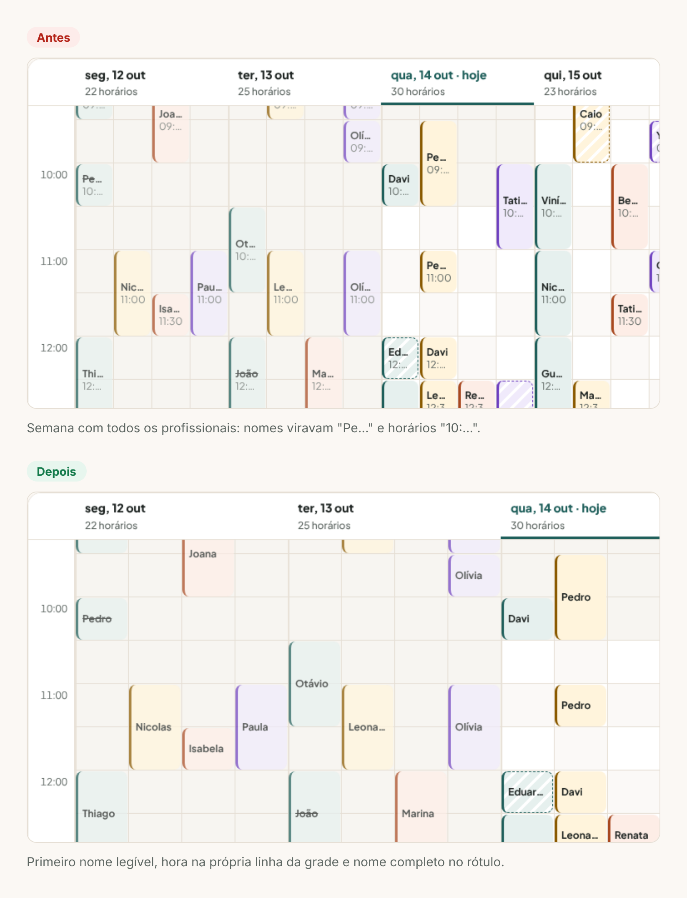
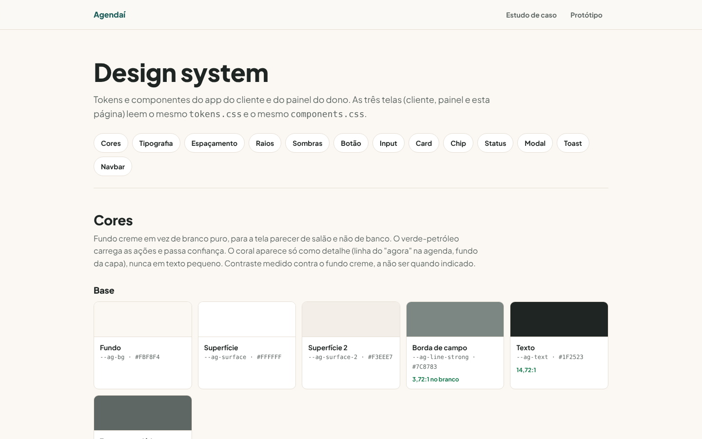

Agendaí
Agendamento para salão, barbearia e estética: o cliente marca sozinho, sem criar conta, e o dono organiza a agenda arrastando horários e acompanha o mês.

Contexto
No salão de bairro, o agendamento acontece no WhatsApp. O dono, que muitas vezes também atende, responde entre um cliente e outro e anota tudo numa agenda de papel.
Desenhei o Agendaí com dois lados: um link em que o cliente marca sozinho, sem criar conta, e um painel em que o dono organiza a agenda e vê como vai o mês.
O dono perde horário, esquece de confirmar e não sabe quanto faturou no mês.O problema, em uma frase
Processo
Analisei cinco produtos reais (Booksy, Trinks, AppBarber, Fresha e Google Agenda) e anotei o que cada um faz bem e onde falha para um salão pequeno.
Mais uma conta
Cliente de bairro não quer criar conta. Nome e WhatsApp só entram no último passo.
Agenda escondida
Nos sistemas completos, a agenda divide espaço com módulos raros. Aqui ela é a tela inicial.
Remarcar é formulário
Nos concorrentes, remarcar abre um formulário. Aqui virou arrastar na grade, com Desfazer e um caminho pelo teclado.
Montei duas proto-personas (a dona e o cliente), assumidas como hipótese, e a jornada atual da dona. Daí saíram os fluxos dos dois lados e a priorização do MVP.

A avaliação heurística encontrou 7 problemas e eu corrigi 6. Um deles: na semana com todos os profissionais, os nomes viravam "Pe…" e ninguém conseguia ler.

Solução
O cliente marca em quatro passos e só vê horários livres. O dono vê o dia em colunas por profissional, arrasta para remarcar e acompanha faturamento, faltas e horários mais cheios.


Handoff
Os dois lados do produto usam a mesma base, o que facilita o trabalho de quem vai desenvolver:
- Design system único para o app e o painel: cores, tipografia e 8 componentes com todos os estados, quando usar e o que evitar.
- Protótipo navegável das duas interfaces, ligadas entre si: o que o cliente agenda aparece no painel.
- Regras de negócio escritas: tolerância de 2 horas para mudar, horários de 30 minutos, o que conta como falta.
- Contraste conferido e alternativas de teclado para tudo que é arrastar.

Resultado
- 14
- telas nas duas interfaces
- 8
- componentes documentados
- 7
- problemas achados na heurística
- 6
- corrigidos antes de mostrar
O próximo passo é o teste de usabilidade com cinco donos e cinco clientes. O roteiro já está pronto, com tarefas e métricas.
Aprendizados
- Duas interfaces exigem um design system de verdade. Sem a mesma base, app e painel teriam virado produtos diferentes.
- Número só ajuda quando responde uma pergunta. O que não respondia "quanto entrou, quem falta, quando lota" ficou de fora.
- Gesto rápido não pode ser o único caminho. Arrastar é ótimo no mouse, mas precisa existir pelo teclado e no celular.
Entregas
App para quem tem carro elétrico achar um carregador livre, funcionando e compatível, reservar a vaga e pagar a recarga no mesmo lugar.